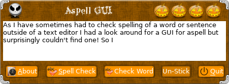
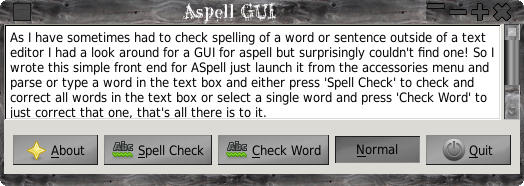
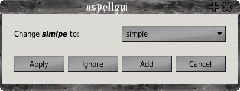

ASpell GUI
ASpellGUI - what is it?
Simple its a simple GUI for aspell.
As I have sometimes had to check spelling of a word or sentence
outside of a text editor I had a look around for a GUI for aspell
but surprisingly couldn't find one! So I wrote this simple front
end for ASpell just launch it from the accessories menu and pase
or type a word in the text box and either press 'Spell Check' to
check and correct all words in the text box or select a single
word and press 'Check Word' to just correct that one, that's all
there is to it.
ASpellGUI can now be built using the Gtk2 or QT5 toolkit.
Installation
Just run ./configure or ./autogen.sh from this folder then make
and sudo make install.
To build the QT5 version use ./configure --enable-qt5,
default is to build the Gtk2 version.
To install to ( say ) /usr instead of the default /usr/local, add
--prefix=/usr.
Main Window Gtk2.

Word replace dialog Gtk2.
Main Window QT5.

Word replace dialog QT5.

Get it here:
Aspell
GUI 0.0.9
Back To Applications